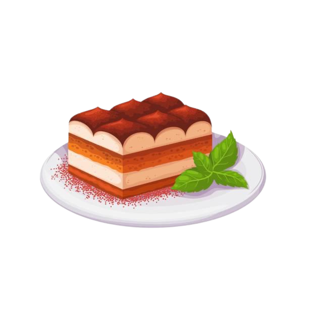

Tiramisu Recipe
A layered dessert made with coffee-soaked ladyfingers, mascarpone, coffee and cocoa.
Ingredients
- 6 large egg yolks
- 3/4 cup (150g) granulated sugar
- 1 cup (240ml) mascarpone cheese, at room temperature
- 1 1/2 cups (360ml) heavy cream
- 2 cups (480ml) brewed espresso or strong coffee, cooled
- 3 tablespoons coffee liqueur (optional)
- 24-30 ladyfinger cookies (savoiardi)
- Unsweetened cocoa powder, for dusting
- Dark chocolate shavings (optional, for garnish)
Preparation Time
- Prep time: 30 minutes
- Chill time: 6 hours (or overnight)
- Total time: ~6 hours 30 minutes
Instructions
- Prepare the Mascarpone Mixture:
- In a large bowl, whisk the egg yolks and sugar together until pale and creamy. You can use a hand mixer or whisk for this.
- Gently fold the mascarpone cheese into the yolk mixture until smooth and well combined.
- Whip the Cream:
- In a separate bowl, beat the heavy cream until stiff peaks form. Be careful not to overwhip.
- Fold the whipped cream into the mascarpone mixture in three batches, ensuring it's evenly combined and fluffy.
- Prepare the Coffee Dip:
- Combine the cooled espresso or coffee with the coffee liqueur (if using) in a shallow dish.
- Assemble the Tiramisu:
- Quickly dip each ladyfinger into the coffee mixture, ensuring they are soaked but not overly soggy.
- Arrange a single layer of dipped ladyfingers in the bottom of a rectangular or square dish (about 9x13 inches).
- Spread half of the mascarpone mixture evenly over the ladyfingers.
- Repeat the process with another layer of soaked ladyfingers and the remaining mascarpone mixture.
- Chill the Tiramisu:
- Cover the dish with plastic wrap and refrigerate for at least 6 hours, or preferably overnight, to allow the flavors to meld.
- Serve:
- Before serving, dust the top of the tiramisu generously with unsweetened cocoa powder.
- Optionally, garnish with dark chocolate shavings.
Enjoy the luxurious and creamy indulgence of this classic Italian dessert!